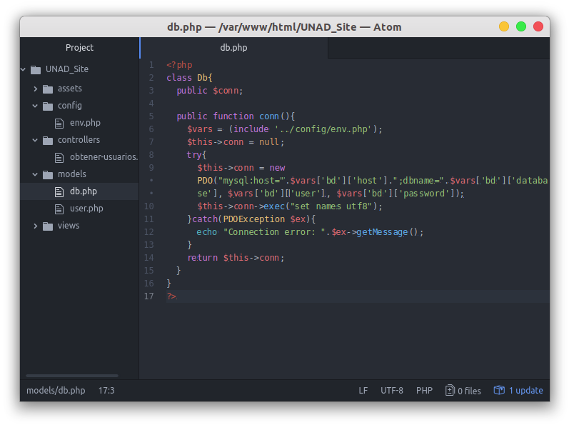

Estando en este punto, es hora de comenzar a programar, para lo cual accederemos a nuestra carpeta models y crearemos nuestro primer modelo, que será la conexión a la base de datos el cual llamaremos "db.php".
Dentro de este crearemos la clase Db, crearemos una función pública "conn" la cual llamaremos cada vez que querramos inicializar la base de datos, y dentro de esta:
- Una variable $vars donde incluiremos nuestro archivo "env.php".
- Un try-catch para evitar errores que rompan el flujo al inicializar la base de datos.
- Dentro del try-catch inicializaremos la clase PDO de PHP la cual le mandaremos los parámetros: host, db, user y pass.
Si todo sale bien, podremos retornar nuestra conexión con el return $this->conn y nuestra aplicación será capaz de jugar con la base de datos sin problema alguno.

Teniendo este archivo tal cual la imagen, tendremos nuestra conexión a la base de datos hecha, entonces ya podremos llamar a las tablas y ver, insertar, modificar o eliminar datos.